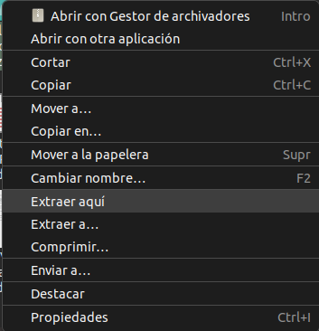

Google Chrome portable es una alternativa que facilita la descarga e instalación del navegador Chrome sin tener que pasar por un software de descarga. Suele venir en un archivo comprimido y para abrirlo suele ser tan fácil como ejecutar un archivo. Además de que es fácil de conseguir, con él podemos tener las mismas prestaciones que tenemos con un navegador normal y lo podremos usar hasta en dispositivos de almacenamiento USB.
Para proceder con la creación de Google Chrome portable necesitaremos descargar el programa, por lo que pinchando sobre Google Chrome nos llevará directamente a la zona de descarga. Descargaremos el archivo y una vez esté descargado tendremos que darle a extraer donde queramos. Es importante decir que dependiendo de en qué sistema operativo queremos montar el google chrome portable tendremos que descargar diferentes archivos, en este caso, este archivo solo sirve para Windows aunque se puede hacer para otros sistemas operativos o montarlo incluso en un pendrive.
Para extraer el contenido del archivo podemos usar diferentes programas, pero lo esencial es hacer click derecho en el archivo y darle a extraer. Una vez se haya extraído ya tendríamos nuestro Google Chrome Portable totalmente operativo, solo tendríamos que pinchar en el ejecutable que se nos ha abierto al haber descomprimido el fichero.